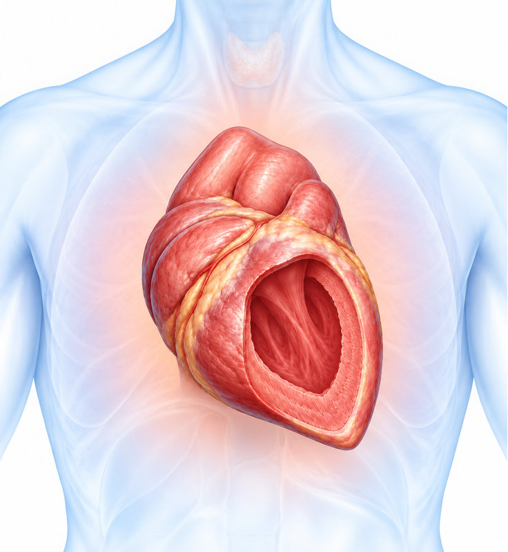
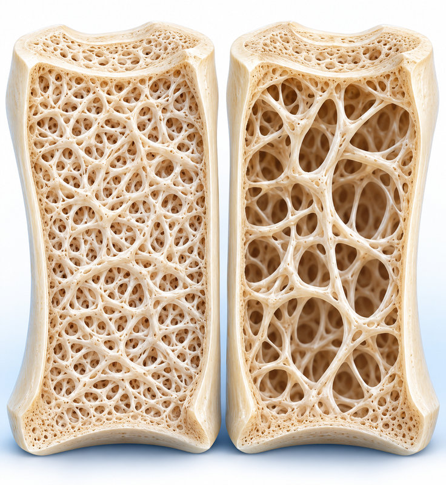

의료진 강의 학습
암 생존자 공동관리
치료력에서 시작
암 생존자 공동관리: 치료력으로 찾는 후기 합병증
치료 종료 뒤의 건강관리는 재발 검사만을 뜻하지 않는다
무증상 검사 확대보다 암 종류·치료·경과를 반영한다
강의 표의 심혈관·흉부 방사선치료 두 행

강의 표의 아로마타제 억제제·난소기능 억제 두 행

강의 표의 백금계·탁산과 면역항암제 두 행
위험 요인에 따라 선별과 유전상담을 연결한다
강의의 추적 검사 범주를 일차 진료에 연결한다
| 혈액 | CBC, 대사·간·신장 기능, 지질, 공복혈당·HbA1c, TSH, 칼슘·비타민D |
|---|---|
| 심혈관 | 혈압·심전도, 필요 시 심초음파·NT-proBNP와 심장내과 연계 |
| 골건강 | 골밀도(DXA): 내분비요법·조기폐경 환자에서 주기적으로 평가 |
| 영상·국가검진 연계 | 유방촬영, 위·대장내시경, 해당 시 저선량 흉부 CT, 자궁경부 검사 |
암 치료 종료 뒤에도 예방의료는 계속된다
환자의 현재 단계와 문제의 성격으로 연결한다
종양학적 응급 상황을 일차 진료에서 놓치지 않는다
강의 표의 여섯 치료력을 빠뜨리지 않고 인계한다
암 생존자 공동관리: 치료력으로 찾는 후기 합병증